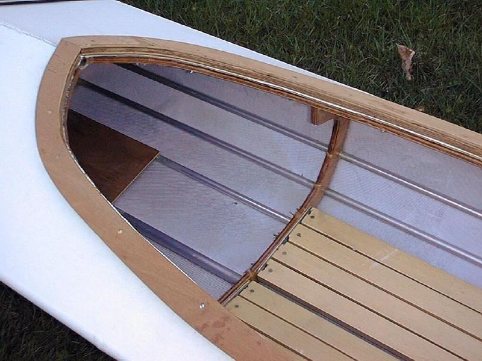

| Lash / Glue Frame | Menu Previous Page Next Page |
|

This older Dyson Baidarka has a lashed / glued frame using aluminum stringers and wood cross sections. This is an excellent alternative to all wood SOF frame construction. This construction type will be added to the manual at later date. Note the removable wood coaming and removable wood / slat floor. Instructions for both are provided in this manual.
|
|